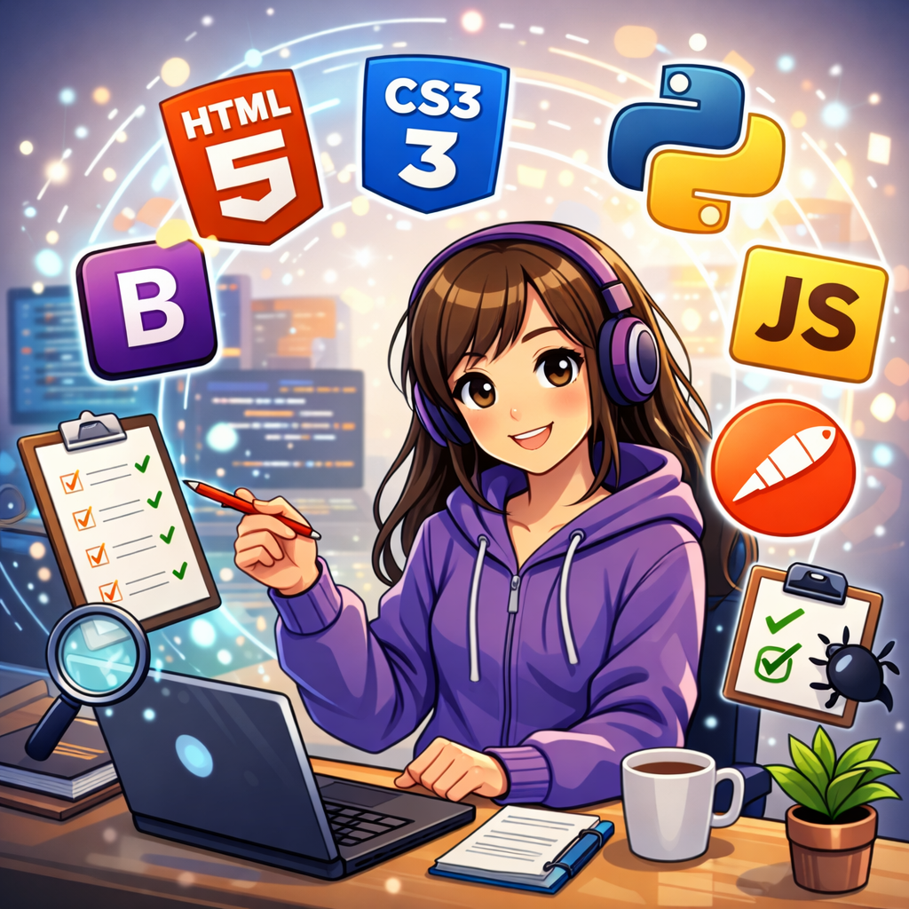

I have hands-on experience in developing responsive and user-friendly web applications using modern front-end technologies and basic back-end concepts.
I have experience in manual testing, ensuring applications are functional, reliable, and user-friendly.

I have experience in testing REST APIs using Postman to ensure proper functionality, response accuracy, and data validation.
I use various tools to support development and testing workflows.
Along with technical skills, I also focus on improving my personal and professional abilities.